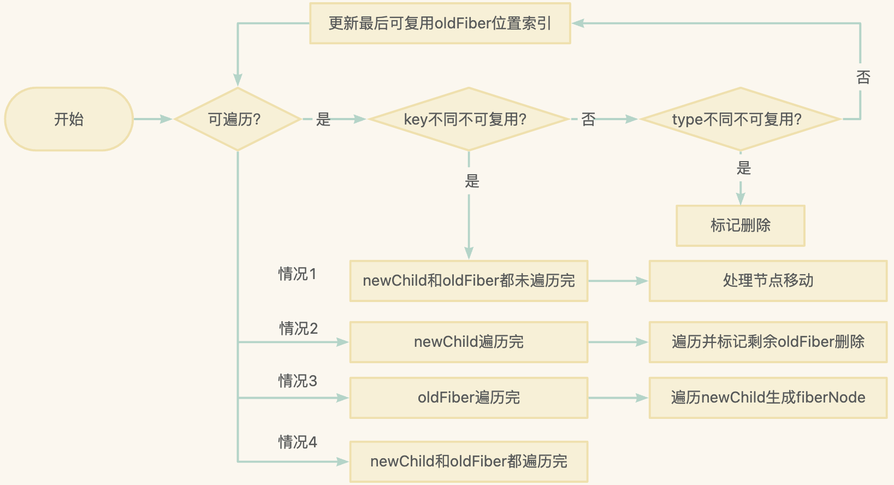

基础概念
React Diff 存在 update 组件中，对于 mount 组件是不进入 diff 流程的
function reconcileChildren(current, workInProgress, nextChildren, renderLanes){
if(current === null) {
// mount 时调用 mountChildFibers 不进行 diff
workInProgress.child = mountChildFibers(workInProgress, null, nextChildren, renderLanes);
}else{
// update 时调用 reconcileChildFibers 进行 diff
workInProgress.child = reconcileChildFibers(workInProgress, current.child, nextChildren, renderLanes);
}
}
对于 update 组件，React 会把当前组件与上次更新时对应的 Fiber 节点进行比较，找出变化的部分进行更新，避免页面大面积重新渲染，减少性能开销，查找变化 Fiber 节点的过程就叫 diff
一个 DOM 节点在某一时刻最多会有 3 个节点和他相关，Diff 本质是对比 JSX 对象和 current Fiber 生成 wip Fiber
- current Fiber：与视图中的 DOM 对应
- workInProgress Fiber（wip Fiber）：与更新进程中的 DOM 对应
- JSX 对象：包含描述 DOM 元素所需的数据
React Diff 规则
diff 本身会耗费性能，就算最前沿算法比对复杂度也为 O(n^3)，n 是树中元素的数量，所以为降低复杂度，React Diff 会预设三个限制，将复杂度降到 O(n)，提高效率
- 规则 1：只对同级元素 diff，如果一个 DOM 元素在前后两次更新中跨越了层级，则 React 不会复用它
- 规则 2：两个不同类型元素会产生不同的树，如 div–>p，React 会销毁 div 及其子孙元素，并新建 p 及其字段元素
- 规则 3：开发者可以通过 key 来暗示哪些子元素在不同渲染下能够保持稳定
// 当没有 key 时会命中规则 2，使得 div 子元素不能复用
// 当有 key 时会命中规则 3，使得 div 子元素能复用，只需交换顺序
// 更新前
<div>
<p key='1'>1</p>
<div key='2'>2</div>
</div>
// 更新后
<div>
<div key='2'>2</div>
<p key='1'>1</p>
</div>
Diff 入口
diff 入口函数是 reconcileChildFibers，从 reconcileChildFibers源码可以发现，diff 时会根据 newChild 类型采用不用的处理函数
- 单节点：当 newChild 类型为 object、number、string，代表同级只有一个节点
- 多节点：当 newChild 类型为 Array，代表同级有多个节点
function reconcileChildFibers(returnFiber, currentFirstChild, newChild, lanes) {
// ...省略
var isObject = typeof newChild === 'object' && newChild !== null;
// 进行单节点 diff
if (isObject) {
switch (newChild.$$typeof) {
case REACT_ELEMENT_TYPE:
return placeSingleChild(reconcileSingleElement(returnFiber, currentFirstChild, newChild, lanes));
// ...省略
}
}
if (typeof newChild === 'string' || typeof newChild === 'number') {
return placeSingleChild(reconcileSingleTextNode(returnFiber, currentFirstChild, '' + newChild, lanes));
}
// 进行多节点 diff
if (isArray$1(newChild)) {
return reconcileChildrenArray(returnFiber, currentFirstChild, newChild, lanes);
// ...省略
}
// ...省略
// 以上都没有命中，删除节点
return deleteRemainingChildren(returnFiber, currentFirstChild);
}
单节点 Diff
上述提到对于 newChild 类型为 object、number、string 会调用 reconcileSingleElement 或 reconcileSingleTextNode 进入单节点 diff 流程，以 reconcileSingleElement 为例，整体流程如下：
- 对于 current Fiber 树不断进行 while 遍历查找 Fiber 节点，并进行 diff
- 尝试命中规则 3：对比新元素和旧节点的 key 是否相同
- key 不同，旧节点不可复用，调用
deleteChild标记该 Fiber 节点删除 - key 相同：尝试命中规则 2
- 注意：非列表元素，key 一般都为 null, 则 null === null 也会进入 key 相同流程
- 尝试命中规则 2：对比新元素和旧节点的 type 是否相同
- type 不同：旧节点不可复用，调用
deleteRemainingChildren将该 Fiber 及其兄弟节点标记删除 - type 相同：旧节点可复用，调用
deleteRemainingChildren删除该节点的所有兄弟节点，克隆一份旧节点并更新 props 属性，返回复用 Fiber 节点
- 当 key 或 type 不同时，根据新 element 元素创建新 Fiber 节点，返回新 Fiber 节点
function reconcileSingleElement(returnFiber, currentFirstChild, element, lanes) {
var key = element.key;
var child = currentFirstChild; // 与视图 DOM 对应的 current Fiber
while (child !== null) {
// 非列表元素，key 一般都为 null, 则 null === null 也会进入 key 相等流程
if (child.key === key) {
// key相同，进一步比较 type 是否相同
switch (child.tag) {
// ...省略
default: {
if (child.elementType === element.type) {
// type 相同，可复用
// 将该节点的兄弟节点标记为删除
deleteRemainingChildren(returnFiber, child.sibling);
// 克隆一份当前 Fiber，并更新节点 props 属性，返回 Fiber
var _existing3 = useFiber(child, element.props);
// ...省略
return _existing3
}
// type 不同则跳出 switch
break;
}
}
// key 相同但 type 不同：将该 Fiber 节点及其兄弟节点标记为删除
deleteRemainingChildren(returnFiber, child);
break;
} else {
// key 不同，将该 Fiber 标记为删除
deleteChild(returnFiber, child);
}
// 继续遍历查找
child = child.sibling;
}
// 当 key 或 type 不相同时，根据新 element 元素创建新 Fiber(created) 并返回
// ...省略 created 创建相关代码
return created
}
注意删除节点的两个函数 deleteChild 和 deleteRemainingChildren:
- deleteChild：当 key 不同时，仅代表当前 fiber 不用被复用，其兄弟 fiber 还可以继续 diff，看有没复用的可能，所以只需标记当前 fiber 删除
- deleteRemainingChildren：作为单节点 diff, 唯一的可能性已经不能复用或可复用时，都代表剩下的 fiber 不需要继续 diff 了，因为没有其它可能了，所有都需要标记删除
单节点 diff 流程图如下：
多节点 Diff
做数组相关算法，常用双指针遍历方式提高效率，如 Vue，但 React Diff 确无法用双指针优化，原因如下：
- React Diff 是将 JSX 对象 newChildren 和 current Fiber 对比的，newChildren 是数组，但 current Fiber 是单链表，所以 current Fiber 不支持双指针遍历
对于 newChild 类型为 Array 会调用 reconcileChildrenArray 进入多节点 diff 流程
对于多节点 diff，首先判断节点更新时属于哪种情况
- 新增子节点：执行新增逻辑
- 删除子节点：执行删除逻辑
- 移动子节点节点：执行更新逻辑
在日常开发中，更新组件的频率比新增/删除更高，所以 diff 会优先判断当前节点是否属于更新，因此多节点 diff 整体逻辑会经历两轮遍历
- 第一轮：处理更新节点，找出可复用的节点
- 第二轮：对第一轮遍历结果分情况处理余下的节点
function reconcileChildrenArray(returnFiber, currentFirstChild, newChildren, lanes) {function reconcileChildrenArray(returnFiber, currentFirstChild, newChildren, lanes) {
var oldFiber = currentFirstChild; // 旧节点 current Fiber
var lastPlacedIndex = 0; // 指的上一个可以复用的，不需要移动的节点的老索引
var newIdx = 0;
// 第一轮遍历
for (; oldFiber !== null && newIdx < newChildren.length; newIdx++) {// 当 oldFiber 或 newChildren遍历完，结束一轮遍历
// ...省略
// 1. updateSlot key 不同，返回 null
// 2. updateSlot key 相同，type 相同，复用旧节点，返回旧节点
var newFiber = updateSlot(returnFiber, oldFiber, newChildren[newIdx], lanes);
// newFiber 为 null, 当前节点不可复用，跳出第一轮循环
if (newFiber === null) {
if (oldFiber === null) {
oldFiber = nextOldFiber;
}
break;
}
if (shouldTrackSideEffects) {
if (oldFiber && newFiber.alternate === null) {
// key 相同，type 不同，旧节点标记删除，继续遍历
deleteChild(returnFiber, oldFiber);
}
}
// 更新最后一个节点移动的位置索引
lastPlacedIndex = placeChild(newFiber, lastPlacedIndex, newIdx);
// ...省略
}
// 对第一轮遍历处理情况，进行第二轮处理
// 情况2：当 newChildren 遍历完，剩下的 oldFiber 没用了，均标记删除
if (newIdx === newChildren.length) {
deleteRemainingChildren(returnFiber, oldFiber);
return resultingFirstChild;
}
// 情况3：oldFiber 都遍历完，将剩余的 newChildren 都遍历生成 fiber 标记 Placement
if (oldFiber === null) {
for (; newIdx < newChildren.length; newIdx++) {
var _newFiber = createChild(returnFiber, newChildren[newIdx], lanes);
// ...省略
lastPlacedIndex = placeChild(_newFiber, lastPlacedIndex, newIdx);
// ...省略
}
return resultingFirstChild;
}
// 情况1：newChildren 和 oldFiber 都没遍历完，说明存在需移动的节点
// existingChildren 的作用是将 oldFiber 以 key-oldFiber 存到 map 中，实现 O(1) 查找旧节点
var existingChildren = mapRemainingChildren(returnFiber, oldFiber);
for (; newIdx < newChildren.length; newIdx++) {
// 遍历 newChildren，与 oldFiber 索引位置对比，标记是否需要移动
}
} var oldFiber = currentFirstChild; // 旧节点 current Fiber
var lastPlacedIndex = 0; // 指的上一个可以复用的，不需要移动的节点的老索引
var newIdx = 0;
// 第一轮遍历
for (; oldFiber !== null && newIdx < newChildren.length; newIdx++) {// 当 oldFiber 或 newChildren遍历完，结束一轮遍历
// ...省略
// 1. updateSlot key 不同，返回 null
// 2. updateSlot key 相同，type 相同，复用旧节点，返回旧节点
var newFiber = updateSlot(returnFiber, oldFiber, newChildren[newIdx], lanes);
// newFiber 为 null, 当前节点不可复用，跳出第一轮循环
if (newFiber === null) {
if (oldFiber === null) {
oldFiber = nextOldFiber;
}
break;
}
if (shouldTrackSideEffects) {
if (oldFiber && newFiber.alternate === null) {
// key 相同，type 不同，旧节点标记删除，继续遍历
deleteChild(returnFiber, oldFiber);
}
}
// 更新最后一个节点移动的位置索引
lastPlacedIndex = placeChild(newFiber, lastPlacedIndex, newIdx);
// ...省略
// 情况2：当 newChildren 遍历完，剩下的 oldFiber 没用了，均标记删除
if (newIdx === newChildren.length) {
deleteRemainingChildren(returnFiber, oldFiber);
return resultingFirstChild;
}
// 情况3：oldFiber 都遍历完，将剩余的 newChildren 都遍历生成 fiber 标记 Placement
if (oldFiber === null) {
for (; newIdx < newChildren.length; newIdx++) {
var _newFiber = createChild(returnFiber, newChildren[newIdx], lanes);
// ...省略
lastPlacedIndex = placeChild(_newFiber, lastPlacedIndex, newIdx);
// ...省略
}
return resultingFirstChild;
}
// 情况1：newChildren 和 oldFiber 都没遍历完，说明存在需移动的节点
// existingChildren 的作用是将 oldFiber 以 key-oldFiber 存到 map 中，实现 O(1) 查找旧节点
var existingChildren = mapRemainingChildren(returnFiber, oldFiber);
for (; newIdx < newChildren.length; newIdx++) {
// 遍历 newChildren，与 oldFiber 索引位置对比，标记是否需要移动
}
}
}
多节点 diff 流程图如下：
参考
《React 设计原理》–卡颂